Contents
First-level or Higher-level Analysis?
Full Analysis or Partial Analysis?
Misc
Data
Pre-Stats
Stats
Contrasts, Thresholding, Rendering
Registration
Bottom Row of Buttons
Time-Series Plots
Higher-level Analysis
Use First-level analysis for analysing each session's data - i.e. the time-series analysis of the raw 4D FMRI data.
Use Higher-level analysis for combining first-level
analyses. You can use this hierarchically - for example at
second-level to analyse across several sessions and then at
third-level to analyse across several subjects.
You can run a full analysis - Pre-Stats; Stats; Post-stats; Registration - or a (sensible) subset of these options.
If you select Post-stats or Registration only, you will need to select a FEAT directory (or directories) instead of starting with 4D image data; the results already produced in those FEAT directories will then be used as appropriate.
Note that if you want to run only Post-stats, you must
select the FEAT directory/directories before editing the contrasts or
thresholding parameters, as these will get reset on selection of the
FEAT directory/directories.
Balloon help (the popup help messages in the FEAT GUI) can be turned off once you are familiar with FEAT.
The Progress watcher button allows you to tell Feat not to start a web browser to watch the FEAT analysis progress. If you are running lots of analyses you probably want to turn this off; you can view the same logging information by looking at the report_log.html files in any FEAT directories instead.
For the above two settings, you can control the default behaviour
of the FEAT GUI by putting the following, with appropriate values set,
in a file called .fslconf/feat.tcl in your home directory;
set fmri(help_yn) 1
set fmri(featwatcher_yn) 1
Brain/background threshold, % This is automatically calculated, as a % of the maximum input image intensity. It is used in intensity normalisation, brain mask generation and various other places in the FEAT analysis.
The next section controls the Design efficiency calculations made when setting up the EVs and contrasts in the paradigm design (see later for more on this). The Noise level % and Temporal smoothness together characterise the noise in the data, to be used only in the design efficiency estimation. The Noise level % is the standard deviation (over time) for a typical voxel, expressed as a percentage of the baseline signal level. The Temporal smoothness is the smoothness coefficient in a simple AR(1) autocorrelation model (much simpler than that actually used in the FILM timeseries analysis but good enough for the efficiency calculation here). If you want to get a rough estimate of this noise level and temporal smoothness from your actual input data, press the Estimate from data button (after you have told FEAT where your input data is). This takes about 30-60 seconds to estimate. This applies just the spatial and temporal filtering (i.e., no motion correction) that you have specified in the Pre-stats section, and gives a reasonable approximation of the noise characteristics that will remain in the fully preprocessed data, once FEAT has run. The Z threshold is the Z value used to determine what level of activation would be statistically significant, to be used only in the design efficiency calculation. Increasing this will result in higher estimates of required effect.
If you are just re-running post-stats or registration, you can either choose to Overwrite original post-stats results and registration results, inside the existing FEAT directory, or Copy original FEAT directory for a complete copy of the original FEAT directory, with the new results in it.
Cleanup first-level standard-space images; when you run a
higher-level analysis, the first thing that happens is that
first-level images are transformed into standard-space (in
<firstlevel>.feat/reg_standard subdirectories) for feeding into
the higher-level analysis. This takes up quite a lot of disk space, so
if you want to save disk space, turn this option on and these these
upsampled images will get deleted once they have been fed into the
higher-level analysis. However, generating them can take quite a lot
of time, so if you want to run several higher-level analyses, all
using the same first-level FEAT directories, then leave this option
turned off.
First set the Number of inputs. At first level this is the number of identical analyses you want to carry out. At higher level this is the number of FEAT directories to be input from the lower-level analysis to the higher.
Next set the filename of the 4D input image (e.g. /home/sibelius/func.hdr). You can setup FEAT to process many input images, one after another, as long as they all require exactly the same analysis. Each one will generate its own FEAT directory, the name of which is based on the input data's filename.
Alternatively, if you are running either just Post-stats or Registration only, or running Higher-level analysis, the selection of 4D data changes to the selection of FEAT directories. Note that in this case you should select the FEAT directories before setting up anything else in FEAT (such as changing the thresholds). This is because quite a lot of FEAT settings are loaded from the first selected FEAT directory, possibly over-writing any settings which you wish to change!
If the Output directory is left blank, the output FEAT directory name is derived from the input data name. (For higher-level analysis, the output name is derived from the first lower-level FEAT directory selected as input.) If, however, you wish to explicitly choose the output FEAT directory name, for example, so that you can include in the name a hint about the particular analysis that was carried out, you can set this here. This output directory naming behaviour is modified if you are setting up multiple first-level analyses, where you are selecting multiple input data sets and will end up with multiple output FEAT directories. In this case, whatever you enter here will be used and appended to what would have been the default output directory name if you had entered nothing. For example, if you are setting up 3 analyses with input data names /home/neo/fmri1.hdr, /home/neo/fmri2.hdr and /home/neo/fmri3.hdr, and set the output name to analysisA, the output directories will end up as /home/neo/fmri1_analysisA.feat etc.
Total volumes shows the number of FMRI volumes in the time series, including any initial volumes that you wish to delete. This will get set automatically once valid input data has been selected. Alternatively you can set this number by hand before selecting data so that you can setup and view a model without having any data, for experimental planning purposes etc.
Delete volumes controls the number of initial FMRI volumes to delete before any further processing. You should have decided on this number when the scans were acquired. Typically your experiment would have begun after these initial scans (sometimes called "dummy scans"). These should be the volumes that are not wanted because steady-state imaging has not yet been reached - typically two or three volumes. These volumes are deleted as soon as FEAT is started, so all 4D data sets produced by FEAT will not contain the deleted volumes. Note that Delete volumes should not be used to correct for the time lag between stimulation and the measured response - this is corrected for in the design matrix by convolving the input stimulation waveform with a blurring-and-delaying haemodynamic response function. Most importantly, remember when setting up the design matrix, that the timings in the design matrix start at t=0 seconds, and this corresponds to the start of the first image taken after the deleted scans. In other words, the design matrix starts AFTER the deleted scans have been deleted.
TR controls the time (in seconds) between scanning successive FMRI volumes.
The High pass filter cutoff controls the longest temporal
period that you will allow. A sensible setting in the case of an rArA
or rArBrArB type block design is the (r+A) or (r+A+r+B) total cycle
time. For event-related designs the rule is not so simple, but in
general the cutoff can typically be reduced at least to 50s. This
value is setup here rather than in Pre-stats because it also
affects the generation of the model; the same high pass filtering is
applied to the model as to the data, to get the best possible match
between the model and data.
You will normally want to apply Motion correction; this attempts to remove the effect of subject head motion during the experiment. MCFLIRT uses FLIRT (FMRIB's Linear Registration Tool) tuned to the problem of FMRI motion correction, applying rigid-body transformations. Note that there is no "spin history" (aka "correction for movement") option with MCFLIRT. This is because this is still a poorly understood correction method which is under further investigation.
B0 unwarping is carried out using FUGUE. Here you need to enter the B0 fieldmap images which should be created before you run FEAT and usually require site/scanner/sequence specific processing. See the PRELUDE/FUGUE documentation for more information on creating these images. The fieldmap and functional (EPI) images must be in the same orientation (LR/AP/SI labels the same in FSLView), although they do not need to be registered or have the same resolution or exact FOV. In the GUI, the two images that are required are (1) a fieldmap image which must have units of rad/s, and (2) a brain-extracted and registered magnitude image (this is usually created by running BET on the standard magnitude-only reconstructed image from the fieldmap sequence data). Next you need to enter the Effective EPI echo spacing in milliseconds. This is the time between echoes in successive k-space lines. If you are using an accelerated sequence (parallel imaging) then the number you need here is the echo spacing for the acquired lines divided by the acceleration factor. The EPI TE (echo time) is also in milliseconds. Both of these values relate to your FMRI EPI data, not the fieldmap data. You also need to specify the Unwarp direction, which is the phase-encoding direction of your FMRI EPI data. The sign of this direction will depend on both the sign of the phase encode blips in the EPI sequence and on the sign of the fieldmap. As it can be difficult to predict this sign when using a particular site/scanner/sequence for the first time, it is usual to try both positive and negative values in turn and see which gives better undistortion (the wrong sign will increase the amount of distortion rather than decrease it). Finally, you need to specify a % Signal loss threshold. This determines where the signal loss in the EPI is too great for registration to get a good match between the EPI data and other images. Areas where the % signal loss in the EPI exceeds this threshold will get masked out of the registration process between the EPI and the fieldmap and structural images. If you are running both motion correction and B0 unwarping, the motion correction resampling does not get applied at the same time as the motion estimation; instead the motion correction gets applied simultaneously with the application of the B0 unwarping, in order to minimise interpolation-related image blurring. Once you have run FEAT you should definitely check the unwarping report (click on the mini-movie, shown in the main FEAT report page, that flicks between distorted and undistorted versions of example_func). In particular you should check that it looks like the unwarping has occurred in the correct direction (and change the unwarp direction and/or sign if it is not).
Slice timing correction corrects each voxel's time-series for the fact that later processing assumes that all slices were acquired exactly half-way through the relevant volume's acquisition time (TR), whereas in fact each slice is taken at slightly different times. Slice timing correction works by using (Hanning-windowed) sinc interpolation to shift each time-series by an appropriate fraction of a TR relative to the middle of the TR period. It is necessary to know in what order the slices were acquired and set the appropriate option here. If slices were acquired from the bottom of the brain to the top select Regular up. If slices were acquired from the top of the brain to the bottom select Regular down. If the slices were acquired with interleaved order (0, 2, 4 ... 1, 3, 5 ...) then choose the Interleaved option. If slices were not acquired in regular order you will need to use a slice order file or a slice timings file. If a slice order file is to be used, create a text file with a single number on each line, where the first line states which slice was acquired first, the second line states which slice was acquired second, etc. The first slice is numbered 1 not 0. If a slice timings file is to be used, put one value (ie for each slice) on each line of a text file. The units are in TRs, with 0.5 corresponding to no shift. Therefore a sensible range of values will be between 0 and 1.
By default BET brain extraction is applied to create a brain mask from the first volume in the FMRI data. This is normally better than simple intensity-based thresholding for getting rid of unwanted voxels in FMRI data. Note that here, BET is setup to run in a quite liberal way so that there is very little danger of removing valid brain voxels. If the field-of-view of the image (in any direction) is less than 30mm then BET is turned off by default. Note that, with respect to any structural image(s) used in FEAT registration, you need to have already run BET on those before running FEAT.
Spatial smoothing is carried out on each volume of the FMRI data set separately. This is intended to reduce noise without reducing valid activation; this is successful as long as the underlying activation area is larger than the extent of the smoothing. Thus if you are looking for very small activation areas then you should maybe reduce smoothing from the default of 5mm, and if you are looking for larger areas, you can increase it, maybe to 10 or even 15mm. To turn off spatial smoothing simply set FWHM to 0.
Intensity normalisation forces every FMRI volume to have the same mean intensity. For each volume it calculates the mean intensity and then scales the intensity across the whole volume so that the global mean becomes a preset constant. This step is normally discouraged - hence is turned off by default. When this step is not carried out, the whole 4D data set is still normalised by a single scaling factor ("grand mean scaling") - each volume is scaled by the same amount. This is so that higher-level analyses are valid.
Perfusion subtraction is a pre-processing step for perfusion FMRI (as opposed to normal BOLD FMRI) data. It subtracts even from odd timepoints in order to convert tag-control alternating timepoints into a perfusion-only signal. If you are setting up a full perfusion model (where you model the full alternating tag/control timeseries in the design matrix) then you should not use this option. The subtraction results in a temporal shift of the sampled signal to half a TR earlier; hence you should ideally shift your model forwards in time by half a TR, for example by reducing custom timings by half a TR or by increasing the model shape phase by half a TR. When you select this option, FILM prewhitening is turned off (because it is not well-matched to the autocorrelation resulting from the subtraction filter) and instead the varcope and degrees-of-freedom are corrected after running FILM in OLS mode. See the Perfusion section of the manual for more information.
Highpass temporal filtering uses a local fit of a straight line (Gaussian-weighted within the line to give a smooth response) to remove low frequency artefacts. This is preferable to sharp rolloff FIR-based filtering as it does not introduce autocorrelations into the data. Lowpass temporal filtering reduces high frequency noise by Gaussian smoothing (sigma=2.8s), but also reduces the strength of the signal of interest, particularly for single-event experiments. It is not generally considered to be helpful, so is turned off by default. By default, the temporal filtering that is applied to the data will also be applied to the model.
The MELODIC option runs the ICA (Independent Component Analysis) tool in FSL. We recommend that you run this, in order to gain insight into unexpected artefacts or activation in your data.
As well as being a good way to find structured noise (or unexpected activation) in your data, ICA can also be used to remove chosen components (normally obvious scanner-related or physiological artefacts) from your data in order, for example, in order to improve the FEAT results. In order to do this:
feat_output_directory.feat/filtered_func_data.ica/report/00index.html)
in a web browser and look through the components to identify those
that you wish to remove; record the list of component numbers to
remove.
cd feat_output_directory.feat fsl_regfilt -i filtered_func_data -o denoised_data -d filtered_func_data.ica/melodic_mix -f "2,5,9"where you should replace the comma-separated list of component numbers with the list that you previously recorded when viewing the MELODIC report.
feat_output_directory.feat/denoised_data
By default the final FEAT output directory will be in denoised_data.feat inside the first FEAT output directory.
General linear modelling allows you to describe one or more stimulation types, and, for each voxel, a linear combination of the modelled response to these stimulation types is found which minimises the unmodelled noise in the fitting. If you are not familiar with the concepts of the GLM and contrasts of parameter estimates, then you should now read Appendix A.
For normal first-level time series analysis you should Use FILM prewhitening to make the statistics valid and maximally efficient. For other data - for example, very long TR (>30s) FMRI data, PET data or data with very few time points (<50) - this should be turned off.
You may want to include the head motion parameters (as estimated by MCFLIRT motion correction in the Pre-stats processing) as confound EVs in your model. This can sometimes help remove the residual effects of motion that are still left in the data even after motion correction. This is not strongly recommended as there is still much to learn about residual motion effects; simply adding such confound EVs is quite a simplistic solution. We would recommend instead turning on MELODIC in the FEAT Pre-stats and using ICA-based denoising as a better alternative to removing residual motion effects (see the FEAT manual for more information on that). However, if you do wish to include motion parameters in your model then select this option. If you do this, then once the motion correction has been run, the translation and rotation parameters are added as extra confound EVs in the model. If you select this option then only the components of the main EVs that are orthogonal to the motion confound EVs will be used in determining significance of the effects of interest. You cannot use this option unless you are carrying out both pre-stats and stats in the same FEAT run.
If you want to add other confound EVs than motion parameters, that you have precomputed for your data, then turn the Add additional confound EVs option on and then enter the filename of a raw text file (or, if you are setting up multiple analyses, enter one text file for each input FMRI dataset to be processed). The file can contain as many confound EVs as you like, each in a separate column in the text file.
You can setup FILM easily for simple designs by pressing the Model setup wizard button. At first level, the options are regular rest-A-rest-A... or rest-A-rest-B-rest-A-rest-B... designs (block or single-event) for normal BOLD FMRI, or a rest-A-rest-A... design for full modelling of perfusion FMRI data. At second level, the options are one-group t-test, two-group-unpaired and two-group-paired t-tests. Then, in the wizard popup window, choose whether to setup rArA... or rArBrArB... designs (regular block or single-event). The r blocks will normally be rest (or control) conditions. The perfusion rArA... option sets up the full model for a simple perfusion experiment, setting up a constant-height control-tag EV, an average BOLD component EV and the interaction EV, which represents the control-tag functional modulation (see the Perfusion section of the manual for more information on this). Next, press Process and the model will be setup for you. If you want to setup a more complex model, or adjust the setup created by the wizard, press Full model setup button. This is now described in detail.
First set the Number of original EVs (explanatory variables) - basic number of explanatory variables in the design matrix; this means the number of different effects that you wish to model - one for each modelled stimulation type, and one for each modelled confound. For first-level analyses, it is common for the final design matrix to have a greater number of real EVs than this original number; for example, when using basis functions, each original EV gives rise to several real EVs.
Now you need to setup each EV separately. Choose the basic shape of the waveform that describes the stimulus or confound that you wish to model. The basic waveform should be exactly in time with the applied stimulation, i.e., not lagged at all. This is because the measured (time-series) response will be delayed with respect to the stimulation, and this delay is modelled in the design matrix by convolution of the basic waveform with a suitable haemodynamic response function (see below).
If you need an EV to be ignored, choose Empty (all zeros). You are most likely to want to do this if you want the EVs to all have the same meaning for multiple runs, but in some runs one or more EVs contain no events of the relevant type. Note that in this case you will get a warning about the matrix being rank deficient.
For an on/off (or a regularly-spaced single-event) experiment choose a square wave. To model single-event experiments with this method, the On periods will probably be small - e.g., 1s or even less.
For sinusoidal modelling choose the Sinusoid option and select the number of Harmonics (or overtones) that you want to add to the fundamental frequency.
For a single-event experiment with irregular timing for the stimulations, a custom file can be used. With Custom (1 entry per volume), you specify a single value for each timepoint. The custom file should be a raw text file, and should be a list of numbers, separated by spaces or newlines, with one number for each volume (after subtracting the number of deleted images). These numbers can either all be 0s and 1s, or can take a range of values. The former case would be appropriate if the same stimulus was applied at varying time points; the latter would be appropriate, for example, if recorded subject responses are to be inserted as an effect to be modelled. Note that it may or may not be appropriate to convolve this particular waveform with an HRF - in the case of single-event, it is.
For even finer control over the input waveform, choose Custom (3 column format). In this case the custom file consists of triplets of numbers; you can have any number of triplets. Each triplet describes a short period of time and the value of the model during that time. The first number in each triplet is the onset (in seconds) of the period, the second number is the duration (in seconds) of the period, and the third number is the value of the input during that period. The same comments as above apply, about whether these numbers are 0s and 1s, or vary continuously. The start of the first non-deleted volume correpsonds to t=0.
Note that whilst ALL columns are demeaned before model fitting, neither custom format will get rescaled - it is up to you to make sure that relative scaling between different EVs is sensible. If you double the scaling of values in an EV you will halve the resulting parameter estimate, which will change contrasts of this EV against others.
If you select Interaction then the current EV is modelled as an interaction between other EVs, and is normally used to create a third EV from two existing EVs, to model the nonlinear interaction between two different conditions (or for a Psycho-Physiological Interaction, or PPI, analysis). On the line of buttons marked Between EVs you select which other EVs to interact to form the new one. The selected EVs then get multiplied together to form the current EV. Normally they are multiplied after (temporarily) shifting their values so that the minimum of each EV is zero (Make zero = Min); however, if you change the Make zero: option, individual EVs will instead be zero-centred about the min and max values (Centre) or de-meaned (Mean). If all EVs feeding into an interaction have the same convolution settings, the interaction is calculated before convolutions, and the same convolution applied to the interaction; if they do not all have the same settings, then all convolutions are applied before forming the interaction, and no further convolution is applied to the interaction EV.
For PPI analyses, you should probably do something like: Set EV1 to your main effect of interest, set EV2 to your data-derived regressor (with convolution turned off for EV2), and set EV3 to be an Interaction. EV3 would then be an interaction between EV1 and EV2, with EV1's zeroing set to Centre and EV2's zeroing set to Mean. For more detail on PPI analyses in theory and in practice, see Jill O'Reilly's PPI page.
If you have chosen a Square or Sinusoid basic shape, you then need to specify what the timings of this shape are. Skip is the initial period of zeros (in seconds) before the waveform commences. Off is the duration (seconds) of the "Off" periods in the square wave. On is the duration (seconds) of the "On" periods in the square wave. Period is the period (seconds) of the Sinusoid waveform. Phase is the phase shift (seconds) of the waveform; by default, after the Skip period, the square wave starts with a full Off period and the Sinusoid starts by falling from zero. However, the wave can be brought forward in time according to the phase shift. Thus to start with half of a normal Off period, enter the Phase as half of the Off period. To start with a full On period, enter the same as the Off period. Stop after is the total duration (seconds) of the waveform, starting after the Skip period. "-1" means do not stop. After stopping a waveform, all remaining values in the model are set to zero.
Convolution sets the form of the HRF (haemodynamic response function) convolution that will be applied to the basic waveform. This blurs and delays the original waveform, in an attempt to match the difference between the input function (original waveform, i.e., stimulus waveform) and the output function (measured FMRI haemodynamic response). If the original waveform is already in an appropriate form, e.g., was sampled from the data itself, None should be selected. The next three options are all somewhat similar blurring and delaying functions. Gaussian is simply a Gaussian kernel, whose width and lag can be altered. Gamma is a Gamma variate (in fact a normalisation of the probability density function of the Gamma function); again, width and lag can be altered. Double-Gamma HRF is a preset function which is a mixture of two Gamma functions - a standard positive function at normal lag, and a small, delayed, inverted Gamma, which attempts to model the late undershoot.
The remaining convolution options setup different basis functions. This means that the original EV waveform will get convolved by a "basis set" of related but different convolution kernels. By default, an original EV will generate a set of real EVs, one for each basis function.
The Optimal/custom option allows you to use a customised set of basis functions, setup in a plain text file with one column for each basis function, sampled at the temporal resolution of 0.05s. The main point of this option is to allow the use of "FLOBS" (FMRIB's Linear Optimal Basis Set), which is a method for generating a set of basis functions that has optimal efficiency in covering the range of likely HRF shapes actually found in your data. You can either use the default FLOBS set, or use the Make_flobs GUI on the FEAT Utils menu to create your own customised set of FLOBS.
The other basis function options, which will not in general be as good at fitting the data as FLOBS, are a set of Gamma variates of different widths and lags, a set of Sine waves of differing frequencies or a set of FIR (finite-impulse-response) filters (with FIR the convolution kernel is represented as a set of discrete fixed-width "impulses").
For all basis function options there is the option to force exact orthogonalisation of the functions with respect to each other. For basis functions which are generally expected to be orthogonal (normally just) the Optimal/custom option) this option should normally be left on, otherwise you would normally expect to leave it turned off.
You should normally apply the same temporal filtering to the model as you have applied to the data, as the model is designed to look like the data before temporal filtering was applied. In this way, long-time-scale components in the model will be dealt with correctly. This is set with the Apply temporal filtering option.
Adding a fraction of the temporal derivative of the blurred original waveform is equivalent to shifting the waveform slightly in time, in order to achieve a slightly better fit to the data. Thus adding in the temporal derivative of a waveform into the design matrix allows a better fit for the whole model, reducing unexplained noise, and increasing resulting statistical significances. Thus, setting Add temporal derivative produces a new waveform in the final design matrix (next to the waveform from which it was derived) This option is not available if you are using basis functions.
Orthogonalising an EV with respect to other EVs means that it is completely independent of the other EVs, i.e. contains no component related to them. Most sensible designs are already in this form - all EVs are at least close to being orthogonal to all others. However, this may not be the case; you can use this facility to force an EV to be orthogonal to some or all other EVs. This is achieved by subtracting from the EV that part which is related to the other EVs selected here. An example use would be if you had another EV which was a constant height spike train, and the current EV is derived from this other one, but with a linear increase in spike height imposed, to model an increase in response during the experiment for any reason. You would not want the current EV to contain any component of the constant height EV, so you would orthogonalise the current EV wrt the other.
Each EV (explanatory variable, i.e., waveform) in the design matrix results in a PE (parameter estimate) image. This estimate tells you how strongly that waveform fits the data at each voxel - the higher it is, the better the fit. For an unblurred square wave input (which will be scaled in the model from -0.5 to 0.5), the PE image is equivalent to the "mean difference image". To convert from a PE to a t statistic image, the PE is divided by its standard error, which is derived from the residual noise after the complete model has been fit. The t image is then transformed into a Z statistic via standard statistical transformation. As well as Z images arising from single EVs, it is possible to combine different EVs (waveforms) - for example, to see where one has a bigger effect than another. To do this, one PE is subtracted from another, a combined standard error is calculated, and a new Z image is created.
All of the above is controlled by you, by setting up contrasts. Each output Z statistic image is generated by setting up a contrast vector; thus set the number of outputs that you want, using Number of contrasts. To convert a single EV into a Z statistic image, set its contrast value to 1 and all others to 0. Thus the simplest design, with one EV only, has just one contrast vector, and only one entry in this contrast vector; 1. To add more contrast vectors, increase the Number of contrasts. To compare two EVs, for example, to subtract one stimulus type (EV1) from another type (EV2), set EV1's contrast value to -1 and EV2's to 1. A Z statistic image will be generated according to this request.
For first-level analyses, it is common for the final design matrix to have a greater number of real EVs than the original number; for example, when using basis functions, each original EV gives rise to several real EVs. Therefore it is possible in many cases for you to setup contrasts and F-tests with respect to the original EVs, and FEAT will work out for you what these will be for the final design matrix. For example, a single [1] contrast on an original EV for which basis function HRF convolutions have been chosen will result in a single [1] contrast for each resulting real EV, and then an F-test across these. In general you can switch between setting up contrasts and F-tests with respect to Original EVs and Real EVs; though of course if you fine-tune the contrasts for real EVs and then revert to original EV setup some settings may be lost. When you View the design matrix or press Done at the end of setting up the model, an Original EVs setup will get converted to the appropriate Real EVs settings.
An important point to note is that you should not test for differences between different conditions (or at higher-level, between sessions) by looking for differences between their separate individual analyses. One could be just above threshold and the other just below, and their difference might not be significant. The correct way to tell whether two conditions or session's analyses are significantly different is to run a differential contrast like [1 -1] between them (or, at higher-level, run a higher-level FEAT analysis to contrast lower-level analyses); this contrast will then get properly thresholded to test for significance.
There is another important point to note when interpreting differential (eg [1 -1]) contrasts. This is that you are quite likely to only want to check for A>B if both are positive. Don't forget that if both A and B are negative then this contrast could still come out significantly positive! In this case, the thing to do is to use the Contrast masking feature (see below); setup contrasts for the individual EVs and then mask the differential contrast with these.
F-tests enable you to investigate several contrasts at the same time, for example to see whether any of them (or any combination of them) is significantly non-zero. Also, the F-test allows you to compare the contribution of each contrast to the model and decide on significant and non-significant ones. F-tests are non-directional (i.e. test for "positive" and "negative" activation).
One example of F-test usage is if a particular stimulation is to be represented by several EVs, each with the same input function (e.g. square wave or custom timing) but all with different HRF convolutions - i.e. several basis functions. Putting all relevant resulting parameter estimates together into an F-test allows the complete fit to be tested against zero without having to specify the relative weights of the basis functions (as one would need to do with a single contrast). So - if you had three basis functions (EVs 1,2 and 3) the wrong way of combining them is a single (T-test) contrast of [1 1 1]. The right way is to make three contrasts [1 0 0] [0 1 0] and [0 0 1] and enter all three contrasts into an F-test. As described above, FEAT will automatically do this for you if you set up contrasts for original EVs instead of real EVs.
You can carry out as many F-tests as you like. Each test includes the particular contrasts that you specify by clicking on the appropriate buttons.
To view the current state of the design matrix, press View design. This is a graphical representation of the design matrix and parameter contrasts. The bar on the left is a representation of time, which starts at the top and points downwards. The white marks show the position of every 10th volume in time. The red bar shows the period of the longest temporal cycle which was passed by the highpass filtering. The main top part shows the design matrix; time is represented on the vertical axis and each column is a different (real) explanatory variable (e.g., stimulus type). Both the red lines and the black-white images represent the same thing - the variation of the waveform in time. Below this is shown the requested contrasts; each row is a different contrast vector and each column refers to the weighting of the relevant explanatory variable. Thus each row will result in a Z statistic image. If F-tests have been specified, these appear to the right of the contrasts; each column is a different F-test, with the inclusion of particular contrasts depicted by filled squares instead of empty ones.
If you press Efficiency you will see a graphical representation of the covariance of the design matrix and the efficiency of the design/contrasts. Of most practical importance are the values in the lower part of the window, showing the estimability of the contrasts.
The first matrix shows the absolute value of the normalised correlation of each EV with each EV. If a design is well-conditioned (i.e. not approaching rank deficiency) then the diagonal elements should be white and all others darker. So - if there are any very bright elements off the diagonal, you can immediately tell which EVs are too similar to each other - for example, if element [1,3] (and [3,1]) is bright then columns 1 and 3 in the design matrix are possibly too similar. Note that this includes all real EVs, including any added temporal derivatives, basis functions, etc. The second matrix shows a similar thing after the design matrix has been run through SVD (singular value decomposition). All non-diagonal elements will be zero and the diagonal elements are given by the eigenvalues of the SVD, so that a poorly-conditioned design is obvious if any of the diagonal elements are black.
In the lower part of the window, for each requested contrast, that contrast's efficiency/estimability is shown. This is formulated as the strength of the signal required in order to detect a statistically significant result for this contrast. For example, in FMRI data and with a single regressor, this shows the BOLD % signal change required. In the case of a differential contrast, it shows the required difference in BOLD signal between conditions. This Effect Required depends on the design matrix, the contrast values, the statistical significance level chosen, and the noise level in the data (see the Misc tab in the main FEAT GUI). The lower the effect required, the more easily estimable is a contrast, i.e. the more efficient is the design. Note that this does not tell you everything that there is to know about paradigm optimisation. For example, all things being equal, event-related designs tend to give a smaller BOLD effect than block designs - the efficiency estimation made here cannot take that kind of effect into account!
When you have finished setting up the design matrix, press
Done. This will dismiss the GLM GUI, and will give you a final
view of the design matrix.
If you are not carrying out a Full analysis and are re-running Post-stats, a button appears to allow you to Edit contrasts. This allows setup of contrasts and F-tests, to be run on the previous analysis.
If you choose a mask for Pre-threshold masking then all stats images will be masked by the chosen mask before thresholding. There are two reasons why you might want to do this. The first is that you might want to constrain your search for activation to a particular area. The second is that in doing so, you are reducing the number of voxels tested and therefore will make any multiple-comparison-correction in the thresholding less stringent. The mask image chosen does not have to be a binary mask - for example, it can be a thresholded stats image from a previous analysis (in the same space as the data to be analysed here); only voxels containing zero in the mask image will get zeroed in this masking process. If pre-threshold masking is used, it is still necessary to carry out thresholding.
Thresholding: After carrying out the initial statistical test, the resulting Z statistic image is then normally thresholded to show which voxels or clusters of voxels are activated at a particular significance level.
If Cluster thresholding is selected, a Z statistic threshold is used to define contiguous clusters. Then each cluster's estimated significance level (from GRF-theory) is compared with the cluster probability threshold. Significant clusters are then used to mask the original Z statistic image for later production of colour blobs. This method of thresholding is an alternative to Voxel-based correction, and is normally more sensitive to activation. You may well want to increase the cluster creation Z threshold if you have high levels of activation.
The FEAT web page report includes a table of cluster details, viewed by clicking on the relevant colour-overlay image. Note that cluster p-values are not given for contrasts where post-threshold contrast masking (see below) is applied, as there is not a sensible p-value associated with the new clusters formed after masking.
If Voxel thresholding is selected, GRF-theory-based maximum height thresholding is carried out, with thresholding at the level set, using one-tailed testing. This test is less overly-conservative than Bonferroni correction.
You can also choose to simply threshold the uncorrected Z statistic values, or apply no thresholding at all.
Contrast masking: You can setup the masking of contrasts by other contrasts; after thresholding of all contrasts has taken place you can further threshold a given Z statistic image by masking it with non-zeroed voxels from other contrasts.
This means that of the voxels which passed thresholding in the contrast (or F-test) of interest, only those which also survived thresholding in the other contrasts (or F-tests) are kept.
As a further option, the generated masks can be derived from all positive Z statistic voxels in the mask contrasts rather than all voxels that survived thresholding.
Rendering: The Z statistic range selected for rendering is automatically calculated by default, to run from red (minimum Z statistic after thresholding) to yellow (maximum Z statistic). If more than one colour rendered image is to be produced (i.e., when multiple constrasts are created) then the overall range of Z values is automatically found from all of the Z statistic images, for consistent Z statistic colour-coding.
If multiple analyses are to be carried out separately, Use preset Z min/max should be chosen, and the min/max values set by hand. Again, this ensures consistency of Z statistic colour-coding - if several experiments are to be reported side-by-side, colours will refer to the same Z statistic values in each picture. When using this option, you should choose a conservatively wide range for the min and max (e.g., min=1, max=15), to make sure that you do not carry out unintentional thresholding via colour rendering.
With Solid colours you don't see any sign of the background images within the colour blobs; with Transparent colours you will see through the colour blobs to the background intensity.
If you are running a Higher-level analysis you can select
what image will be used as the background image for the activation
colour overlays. The default of Mean highres is probably the
best for relating activation to underlying structure. For a sharper
underlying image, (but one which is not so representative of the group
of subjects), you can instead choose to use the highres image from the
first selected subject. You can alternatively choose to use the
original lowres functional data for the overlays, or the
standard-space template image.
Before any multi-session or multi-subject analyses can be carried out, the different sessions need to be registered to each other. This is made easy with FEAT, by saving the appropriate transformations inside the FEAT directories; the transformations are then applied when group statistics is carried out, to tranform any relevant statistic images into the common space. By doing this (saving the relevant registration transformations and only applying them to the stats images later) a lot of disk space is saved.
Registration inside FEAT uses FLIRT (FMRIB's Linear Image Registration Tool). This is a very robust affine registration program which can register similar type images (intra-modal) or different types (inter-modal). Optionally, the structural to standard space registration can then be further refined by using FNIRT (FMRIB's Nonlinear Image Registration Tool), a fast and accurate nonlinear registration program.
Typically, registration in FEAT is a two-stage process. First an example FMRI low resolution image is registered to an example high resolution image (often the same subject's T1-weighted structural). The transformation for this is saved into the FEAT directory. Then the high res image is registered to a standard image (normally a T1-weighted image in standard space, such as the MNI 152 average image). This transformation, also, is saved. Finally, the two transformations are combined into a third, which will take the low resolution FMRI images (and the statistic images derived from the first-level analyses) straight into standard space, when applied later, during group analysis.
You can carry out registration for each first-level analysis at the same time as the original analysis, or get FEAT to "register" a pre-existing FEAT directory, at a later time. In the latter case, change the Full analysis to Registration only.
The Initial structural image is the high resolution structural image which the low resolution functional data will be registered to, and this in turn will be registered to the main highres image. It only makes sense to have this initial highres image if a main highres image is also specified and used in the registration.
One example of an initial highres structural image might be a medium-quality structural scan taken during a day's scanning, if a higher-quality image has been previously taken for the subject. A second example might be a full-brain image with the same MR sequence as the functional data, useful if the actual functional data is only partial-brain. It is strongly recommended that this image have non-brain structures already removed, for example by using BET.
If the field-of-view of the functional data (in any direction) is less than 120mm, then the registration of the functional data will by default have a reduced degree-of-freedom, for registration stability.
If you are attempting to register partial field-of-view functional data to a whole-brain image then 3 DOF is recommended - in this case only translations are allowed.
If the orientation of any image is different from any other image it may be necessary to change the search to Full search.
The Main structural image is is the main high resolution structural image which the low resolution functional data will be registered to (optionally via the initial structural image), and this in turn will be registered to the standard brain. It is strongly recommended that this image have non-brain structures already removed, for example by using BET.
Standard space refers to the standard (reference) image; it should be an image already in standard space, ideally with the non-brain structures already removed.
If you turn on Nonlinear then FNIRT will be used to apply
nonlinear registration between the subject's structural image and
standard space. FLIRT will still be used before FNIRT, to initialise
the nonlinear registration. Nonlinear registration only works well
between structural images and standard space; you cannot use it
without specifying a structural image. FNIRT requires whole head
(non-brain-extracted) input and reference images for optimal accuracy;
if you turn on nonlinear registration, FEAT will look for the original
non-brain-extracted structural and standard space images in the same
directory as the brain-extracted images that you input into the GUI,
and with the same filename except for the "_brain" at the end. It will
complain if it can't find these, and if this is not corrected,
nonlinear registration will run using the brain-extracted images,
which is suboptimal. The Warp resolution controls the
degrees-of-freedom (amount of fine detail) in the nonlinear warp; it
refers to the spacing between the warp field control points. By
increasing this you will get a smoother ("less nonlinear") warp
field and vice versa.
When you have finished setting up FEAT, press Go to run the analysis. Once FEAT is running, you can either Exit the GUI, or setup further analyses.
The Save and Load buttons enable you to save and load the complete FEAT setup to and from file. The filename should normally be chosen as design.fsf - this is also the name which FEAT uses to automatically save the setup inside a FEAT directory. Thus you can load in the setup that was used on old analyses by loading in this file from old FEAT directories.
The Utils button produces a menu of FEAT-related utilities:
FEAT generates a set of time-series plots for data vs model for peak Z voxels. The main FEAT report web page contains a single plot for each contrast (from the peak voxel); clicking on this takes you to more plots related to that contrast, including also, in the case of cluster-based thresholding, plots averaged over all significant voxels.
Plots of full model fit vs data show the original data and the complete model fit given by the GLM analysis.
Plots of cope partial model fit vs reduced data show the model fit due simply to the contrast of interest versus that part of the data which is relevant to the reduced model (i.e. full data minus full model plus cope partial model). This generally is only easily interpretable in the case of simple non-differential contrasts.
Peri-stimulus plots show the same plots as described above
but averaged over all "repeats" of events, whether ON-OFF blocks in a
block-design, or events in an event-related design. Thus you get to
see the average response shape. Note that FEAT tries to guess what an
"event" is in your design automatically, so in complex designs this
can give somewhat strange looking plots! The peri-stimulus plots are
for the peak voxel only; one pair of full/partial plots is produced
for each EV in the design matrix for that peak voxel, with the
"events" defined from that EV only.
For higher-level analysis (e.g. analysis across sessions or across subjects) FEAT uses FLAME (FMRIB's Local Analysis of Mixed Effects). FLAME uses sophisticated methods for modelling (see related techreport TR01CB1) and estimating the inter-session or inter-subject random-effects component of the mixed-effects variance, by using MCMC to get an accurate estimation of the true random-effects variance and degrees of freedom at each voxel (see related techreport TR03MW1).
FEAT offers both fixed effects (FE) and mixed effects (ME) higher-level modelling. FE modelling is more "sensitive" to activation than ME, but is restricted in the inferences that can be made from its results; because FE ignores cross-session/subject variance, reported activation is with respect to the group of sessions or subjects present, and not representative of the wider population. ME does model the session/subject variability, and it therefore allows inference to be made about the wider population from which the sessions/subjects were drawn.
The remainder of this section discusses FLAME's mixed effects modelling.
"Mixed-effects" (ME) variance is the sum of "fixed-effects" (FE) variance (the within-session across-time variances estimated in the first-level analyses) and "random-effects" (RE) variance (the "true" cross-session variances of first-level parameter estimates). Note that the labels "mixed effects" and "random effects" are often (incorrectly) used interchangeably, partly because they are in practice often (but, importantly, not always) quite similar.
One factor that makes FEAT's approach to higher-level modelling particularly powerful is that it is easy to model and estimate different variances for different groups in the model. For example, an unpaired two-group comparison (e.g. between controls and patients) can be analysed with separate estimates of variance for each group. It is simply a case of specifying in the GUI what group each subject belongs to. (Note - FLAME does not model different group variances differently in the case of higher-level F-tests, due to the complexity of the resulting distributions; this may be addressed in the future.)
A second sophistication not normally available in multi-level analyses is the carrying-up of the first-level (FE) variances to the higher-level analyses. This means that the FE component of the higher-level ME variance can be taken into account when attempting to estimate the ME variance. One reason why it is suboptimal to simply use the directly-estimated ME variance is that this is often in practice lower than the estimated FE variance, a logical impossibility which implies negative RE variance. FEAT forces the RE variance in effect to be non-negative, giving a better estimate of ME variance.
Another reason for wanting to carry up first-level variances to the higher-level analyses is that it is not then necessary for first-level design matrices to be identical (ie "balanced designs" - for example having the same number of time points or event timings). (Note though: the "height" of design matrix waveforms at first-level must still be compatible across analyses.)
A third advantage in higher-level analysis with FEAT is that it is not necessary for different groups to have the same number of subjects (another aspect to design balancing) for the statistics to be valid, because of the ability to model different variances in different groups.
The higher-level estimation method in FEAT (FLAME) uses the above modelling theory and estimates the higher-level parameter estimates and ME variance using sophisticated estimation techniques. First, the higher-level model is fit using a fast approximation to the final estimation ("FLAME stage 1"). Then, all voxels which are close to threshold (according to the selected contrasts and thresholds) are processed with a much more sophisticated estimation process involving implicit estimation of the ME variance, using MH MCMC (Metropolis-Hastings Markov Chain Monte Carlo sampling) to give the distribution for higher-level contrasts of parameter estimates, to which a general t-distribution is then fit. Hypothesis testing can then be carried out on the fitted t-distribution to give inference based upon the best implicit estimation of the ME variance.
You may want to change the normal way of running registration at single-level, if you would rather do the FE analysis at the resolution of the subject's structural MR image, and overlay the multi-session FE activation on this. To do this, when running first-level registrations, turn off the Main structural image option and select the (brain-extracted) structural image as Standard space.
Note that if you also want to feed the first-level data into multi-subject analyses, you will then want to redo the (first-level) registrations in the normal way.
For figures showing the file and directory structures for first- and second-level FEAT analyses, see the Output section.
First change First-level analysis to Higher-level analysis. Note that the only processing option available is Stats + Post-stats; this is because at higher-level both Stats and Post-stats always need setting up, as the thresholding to be carried out affects the functioning of the core stats estimation. For the same reason it is not possible to re-threshold a higher-level analysis - the whole higher-level analysis must be re-run.
You can choose whether your higher-level design matrix will be applied to a set of lower-level cope images or a set of lower-level FEAT directories. In the latter, more normal, case, each contrast in the lower-level FEAT directories will have the higher-level model applied, each resulting in its own FEAT directory within the new group FEAT directory.
Now set the Number of analyses and Select FEAT directories (the first-level FEAT analyses to be fed into this higher-level analysis). FEAT will produce a new directory containing the group stats results; unless you specify an output directory name, the output directory name will be derived from the name of the first selected first-level FEAT directory. The suffix .gfeat is used.
Now setup the Stats. The main choice here is between fixed effects (FE) and mixed effects (ME) higher-level modelling. FE modelling is more "sensitive" to activation than ME, but is restricted in the inferences that can be made from its results; because FE ignores cross-session/subject variance, reported activation is with respect to the group of sessions or subjects present, and not representative of the wider population. ME does model the session/subject variability, and it therefore allows inference to be made about the wider population from which the sessions/subjects were drawn.
The FE option implements a standard weighted fixed effects model. No random effects variances are modelled or estimated. The FE error variances are the variances (varcopes) from the previous level. Weighting is introduced by allowing these variances to be unequal (heteroscedastic). Degrees-of-freedom are calculated by summing the effective degrees-of-freedom for each input from the previous level and subtracting the number of higher-level regressors.
We now discuss the different ME options.
OLS (ordinary least squares) is a fast estimation technique which ignores all lower-level variance estimation and applies a very simple higher-level model. This is the least accurate of the ME options.
For the most accurate estimation of higher-level activation you should use FLAME (FMRIB's Local Analysis of Mixed Effects) modelling and estimation. This is a sophisticated two-stage process using Bayesian modelling and estimation (for example it allows separate modelling of the variance in different subject groups, and forces random effects variance to be non-negative).
The first stage of FLAME is significantly more accurate than OLS, and nearly as fast. The second stage of FLAME increases accuracy slightly over the first stage, but is quite a lot slower (typically 45-200 minutes). It takes all voxels which FLAME stage 1 shows to be near threshold and carries out a full MCMC-based analysis at these points, to get the most accurate estimate of activation.
We generally recommend using FLAME 1, as it is MUCH faster than running both stages, and nearly as accurate. The added value from running full FLAME 1+2 is most significant in a highest-level analysis when you have a small number of subjects (say <10).
If you are carrying out a mid-level analysis (e.g., cross-sessions) and will be feeding this into an even higher-level analysis (e.g., cross-subjects), then you should not use the FLAME 1+2 option, as it is not possible for FLAME to know in advance of the highest-level analysis what voxels will ultimately be near threshold. With respect the question of whether to use fixed-effects or mixed-effects for such mid-level analyses, it could be argued that a mixed-effects analysis should be done at the mid-level. A mixed-effects analysis would assume that the sessions are randomly sampled from a "population" of sessions that that subject could produce. This includes estimation of each subject's session-to-session variance. However, it is common for only a small number of sessions to be collected for each subject, making estimation of each subject's session-to-session variance impractical. One solution to this is to assume a common session-to-session variance for all subjects, thereby providing enough data for the session-to-session variance to be estimated. However, this has a downside in that you lose information about which subjects are good (i.e. low variance) and which subjects are bad (i.e. high variance). Hence, when only a small number of sessions has been collected for each subject (say, less than 10), it is recommended that you use a fixed-effects analysis at the mid-level. This in effect treats the multiple first-level sessions (for each subject) as if they were one long session. Although this does ignore the session-session variability, it is arguable that this is not of interest anyway (this is a somewhat philosophical debate). In short, fixed-effects is favoured as it avoids practical problems associated with esimating the session-to-session variance (when there are not many sessions per subject), at the same time as maintaining information about which subjects are good and bad.
If you do decide to run FLAME 1+2 and the FEAT logs indicate a large difference between the stage 1 and stage 2 estimations (or, for example, the final thresholded zstat image looks "speckled"), this is an indication that your data is highly non-Gaussian (e.g., has one or more strong outlier subjects, or has two clearly different groups of subjects being modelled as a single group). In such a case, stage 1 estimation is quite inaccurate (OLS even more so), hence the larger-than-normal difference between stages 1 and 2. The only really good solution is to investigate in your data what is going on - for example, to find the bad outlier.
If you turn on Use automatic outlier de-weighting then FLAME will automatically detect outlier datapoints (for each voxel, each subject's data is considered with respect to the other subjects regarding whether it appears to be an outlier) [Woolrich M (2008), NeuroImage 41(2)]. Outliers are then automatically de-weighted in the multi-subject statistics. Outlier de-weighting is only available for the mixed effects options as it doesn't make sense in the context of a fixed effects model. It inceases the computation time considerably. The estimated outlier behaviour is stored in the stats directory found inside the higher-level FEAT directory. The prob_outlier1.nii.gz file is a 4D file giving the probability that each subject has outlier data on a voxelwise basis. The global_prob_outlier1.nii.gz file is a 3D file that indicates the size of the outlier population expressed as the proportion of subjects that are outliers (see the paper for more details). Note there are versions of these files for each variance group in the analysis.
For certain higher-level design types you can use the "wizard" - press the Model setup wizard button. Then choose whether to setup single group average or two groups, unpaired or two groups, paired designs. In the case of the unpaired two-group test, set the number of subjects in the first group. When you then press Process the design will be setup for you.
Next go to the full model setup. First choose the Number of EVs (different effects to be modelled). Next, the Number of groups is the number of different groups (of lower-level sessions or subjects). If you ask for more than one group, each group will end up with a separate estimate of variance for the higher-level parameter estimates; for example, if the first 10 inputs are first-level FEAT outputs from control subjects and the next 10 inputs are first-level FEAT outputs from patients, you can setup two different groups and each will end up with its own variance estimates, possibly improving the final modelling and estimation quality (see examples below for further clarification). If you setup different groups for different variances, you will get fewer data-points to estimate each variance (than if only one variance was estimated). Therefore, you only want to use this option if you do believe that the groups possibly do have different variances. If you setup different groups for different variances, it is necessary that, for each EV, only one of the sub-groups has non-zero values. Thus, for example, in the case of an unpaired t-test:
GP EV1 EV2 1 1 1 1 1 1 1 1 1 1 1 1 2 1 -1 2 1 -1 2 1 -1is wrong with respect to this issue, and the following is correct:
GP EV1 EV2 1 1 0 1 1 0 1 1 0 1 1 0 2 0 1 2 0 1 2 0 1
Unlike with first-level analyses, the data (and the model) does not get demeaned. This is because mean effects are usually of interest! One effect of this is that a two-group unpaired model needs 2 EVs - one for finding each group's mean; it will not work to have a single EV containing 1's and -1's.
Setting the Number of additional, voxel-dependent EVs allows
you to add voxel-dependent EVs; every voxel will have a different
higher-level model. For each additional EV that you ask for, you will
need to provide the filename of a 4D image file whose first 3
dimensions are the size of standard space, and whose 4th dimension
corresponds to the number of sessions/subjects that you are inputting
into this higher-level analysis. A typical use of voxel-dependent EVs
would be
to insert
grey-matter partial volume information on the basis of structural
imaging. Note that when you use this option and view the design
matrix, a voxel-dependent EV is respresented graphically by the mean
EV across all voxels, which may well not be very meaningful. If you
want to use structural images (as used in the first-level FEAT
registrations) to create the covariates, then you can easily generate
the 4D covariate image with the feat_gm_prepare script;
just type the script name followed by the desired 4D output image name
and then the full list of first-level FEAT directories (these must be
in the same order as they will appear as inputs to the higher-level
FEAT analysis). You should run this script after all the first-level
FEAT analyses and before running the higher-level FEAT.
Now setup the required Contrasts & F-tests and Post-stats (see examples below).
The higher-level design matrix is applied separately to each of the lower-level contrasts; thus each lower-level contrast will result in a new FEAT directory within the new top-level group FEAT directory. When FEAT has completed the higher-level analyses the new top-level group FEAT output directory contains a web page report which contains: a link to each of the original lower-level FEAT directories; a link to each of the higher-level FEAT analyses (one for each lower-level contrast); the picture of the higher-level design matrix.
We now give specific examples of how to set up the most common
high-level analyses.
Single-Group Average (One-Sample T-Test)
Unpaired Two-Group Difference (Two-Sample Unpaired T-Test)
Paired Two-Group Difference (Two-Sample Paired T-Test)
Tripled Two-Group Difference ("Tripled" T-Test)
Multi-Session & Multi-Subject (Repeated Measures - Three Level Analysis)
F-Tests
Single-Group Average with Additional Covariate
ANOVA: 1-factor 4-levels
ANOVA: 1-factor 4-levels (Repeated Measures)
ANOVA: 2-factors 2-levels
ANOVA: 3-factors 2-levels
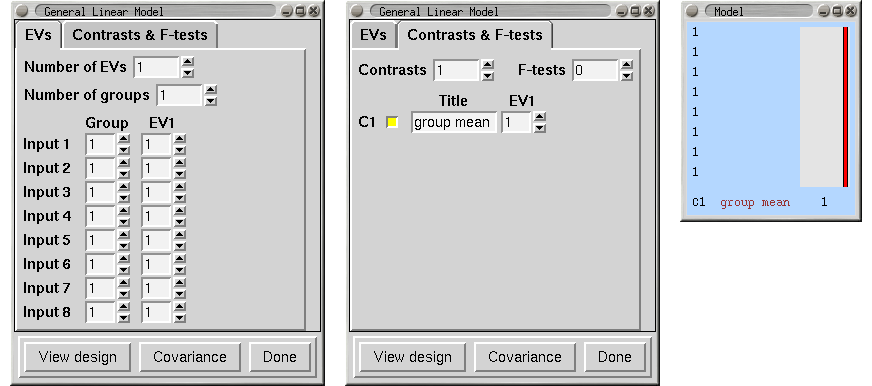
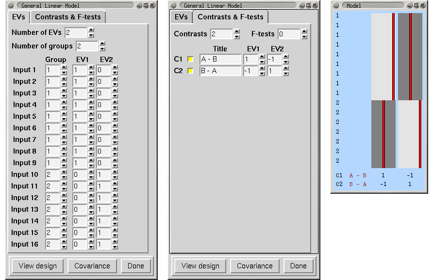
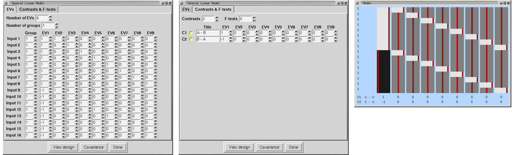
We have 5 subjects, each scanned under 3 conditions, A, B and C. We enter the 5 condition A scans first, then 5 B and then 5 C. As with the paired t-test, EVs 3-7 simply remove the subject means and are not used in the contrasts.
We now want to form the 3 contrasts A-B, A-C and B-C. Note that,
somewhat surprisingly, A-B is not given by [1 0 0...]!
We define PE1=a and PE2=b. Then, we can see by looking at the three
condition blocks, that the mean (on top of the global mean taken out
by EVs 3-7) of condition A is modelled by
A=a+b. Likewise, B=-a, and C=-b (look at the values in EVs 1 and 2).
Therefore we have A-B = 2a+b = contrast [ 2 1 0....],
and A-C = a+2b = contrast [ 1 2 0....],
and B-C = -a+b = contrast [ -1 1 0....].
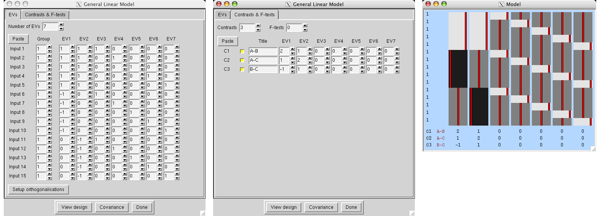
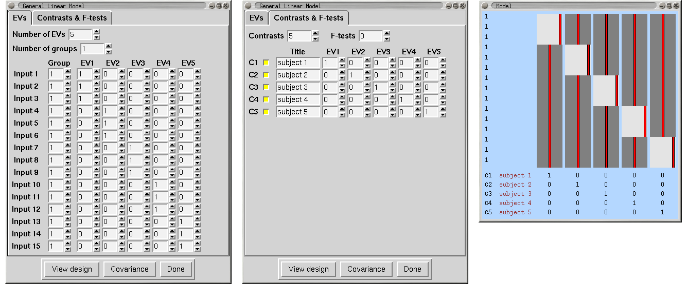
Now we want the mean group effect, across subjects, achieved with a third-level ME analysis. Select Inputs are lower-level FEAT directories and select the 5 relevant directories created at second-level, named something like subject_N.gfeat/cope1.feat.
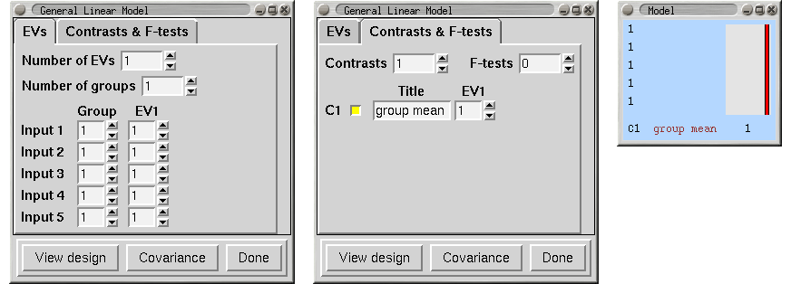
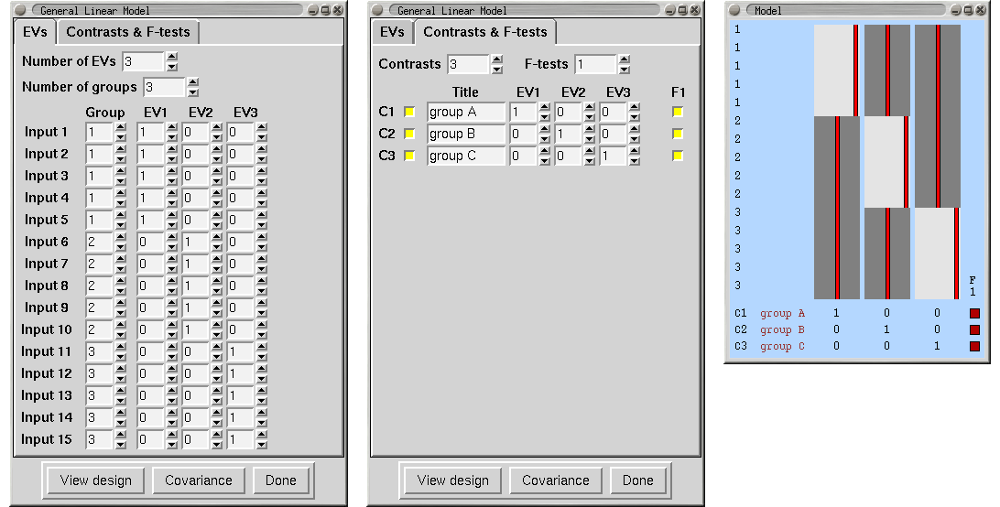
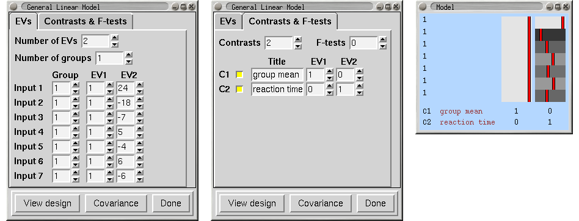
To compare a level with another we could just have one EV per level. However, if we want to ask the ANOVA question - where is there any treatment effect then we can do the following. EV1 fits condition D (it is the only nonzero EV during condition D). EV2 fits A relative to this, i.e. represents A-D (see below for explanation). The F-test then tests for any deviation - ie any difference between the levels, and corresponds exactly to the standard ANOVA test.
If, as well as the ANOVA test, you wanted to interpret individual contrasts:
If we define m,a,b,c as the 4 PE values, then
A=a+m, B=b+m, C=c+m, D=m.
Thus the first PE, m, is level D, the second is a=A-m=A-D, etc.
To get the mean: mean = (A+B+C+D)/4 = m+(a+b+c)/4 = contrast [ 1 1/4 1/4 1/4 ]
To get A-mean: A-mean = (3a-b-c)/4 = contrast [ 0 3/4 -1/4 -1/4 ] etc.
To get D-mean: D-mean = (-a-b-c)/4 = contrast [ 0 -1/4 -1/4 -1/4 ].
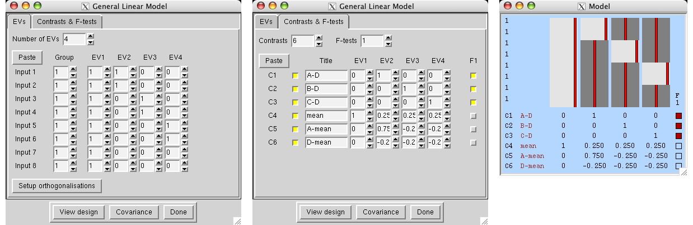
This approach is analogous to the difference between the unpaired and paired two-group t-test examples shown above. For the other ANOVA examples below, it is similarly straightforward to replace the mean EV with multiple mean EVs in this manner, if you have more than one session per subject.
Subject 1's 4 levels are Inputs 1,3,5,7 and subject 2's 4 levels are Inputs 2,4,6,8.
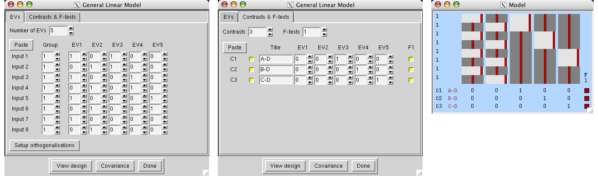
We have 8 subjects and 2 factors, each at 2 levels. To carry out a standard ANOVA we use the following, the three F-tests giving the standard ANOVA results for factor A, factor B and the interaction effect. This assumes that both factors are fixed effects.
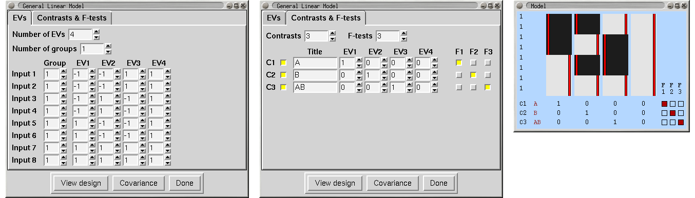
Random Effects
If both factors are random effects then the F-tests for the effects of the factors are different - the denominator in the F is derived from the interaction effect and not the within-cell errors. In this case, the relevant F images for factors A and B can be formed as Fa=fstat1/fstat3 and Fb=fstat2/fstat3. In order to carry this out, first run FEAT using the above design. Then:
cd <featdir>/stats fslmaths fstat1 -div fstat3 fstata fslmaths fstat2 -div fstat3 fstatb ftoz -zout zfstata fstata 1 1 ftoz -zout zfstatb fstatb 1 1You could then do thresholding on zfstata and zfstatb with easythresh.
Mixed Effects
If one factor is random and the other is fixed then we want a mixed effects analysis. In this case the fstat which needs the different denominator is the one associated with the fixed factor. For example, if factor A is fixed and factor B is random, then fstat2 already gives you the effect of factor B and for factor A you need to create Fa=fstat1/fstat3 as above.
We have 16 subjects and 3 factors, each at 2 levels. To carry out a standard ANOVA we use the following, the F-tests giving the standard ANOVA results for the factors and their interactions.
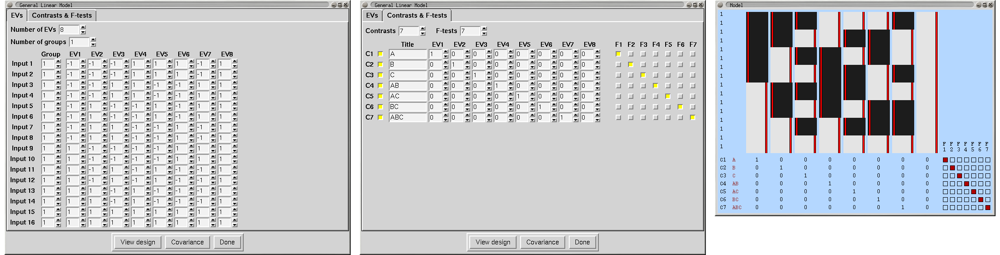
Random/Mixed Effects
The following table shows how to test for factor effects with various models:
| model | A | B | C | F(A) | F(B) | F(C) | F(AB) | F(AC) | F(BC) | F(ABC) |
|---|---|---|---|---|---|---|---|---|---|---|
| 1 | F | F | F | fstat1 | fstat2 | fstat3 | fstat4 | fstat5 | fstat6 | fstat7 |
| 2 | R | R | R | fstat4/fstat7 | fstat5/fstat7 | fstat6/fstat7 | fstat7 | |||
| 3 | F | R | R | fstat2/fstat6 | fstat3/fstat6 | fstat4/fstat7 | fstat5/fstat7 | fstat6 | fstat7 | |
| 4 | F | F | R | fstat1/fstat5 | fstat2/fstat6 | fstat3 | fstat4/fstat7 | fstat5 | fstat6 | fstat7 |